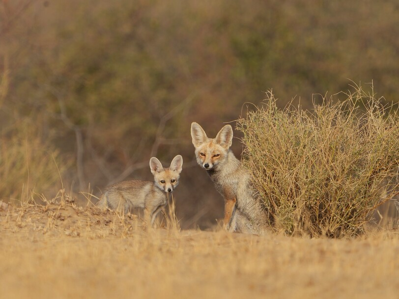
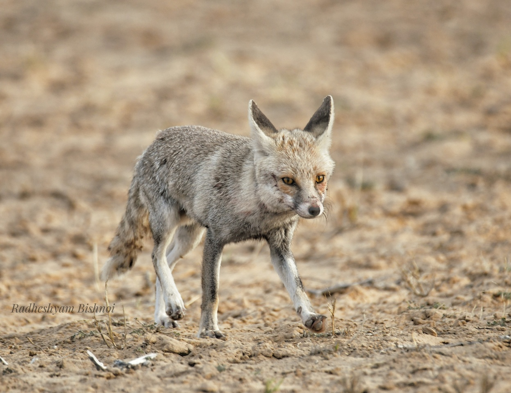

Explore the diverse world of mammals that call this region home
Mammals in the Thar Desert region offer a captivating glimpse into the wonders of desert wildlife.
Despite the harsh and arid conditions, this ecosystem is home to a surprising variety of mammals, each
uniquely adapted to thrive in the desert's unforgiving environment.
One of the most iconic desert mammals is the Indian wild ass, known for its endurance and
remarkable speed. These creatures can be spotted galloping across the vast expanses of the desert, their
nimbleness a testament to their adaptation to the harsh desert terrain.
Encountering these remarkable mammals on a wildlife safari through the Thar Desert is a testament to the
resilience and adaptability of nature. It's an experience that leaves a lasting impression, connecting
visitors with the enduring spirit of this arid yet vibrant ecosystem.

Rare and Elusive Species: The Desert National Park is a sanctuary for some of the world's most
elusive and rare mammals. Among them, the Desert Cat, with its solitary and stealthy nature, is a true
desert ghost. You may catch a glimpse of these elusive felines, known for their nocturnal prowling and
impeccable hunting skills. The Desert Fox, a close relative, is even rarer and considered endangered,
making any sighting a remarkable experience. These creatures have adapted to the desert's extreme
conditions, making them symbols of resilience..
Conservation Efforts: Protecting the vulnerable and endangered species in the park, especially
the Desert Fox, is a top priority for conservationists. Learn about the tireless efforts to safeguard
their habitats, including initiatives to mitigate habitat loss and minimize human interference. Discover
how local communities and conservation organizations work together to ensure the survival of these
captivating creatures and the delicate desert ecosystem they call home.
Common Residents: Some mammals are common residents of the Desert National Park, making them
more frequently spotted during your visit. The Chinkara, a graceful Indian gazelle, is often seen
gracefully leaping through the golden dunes. Blue Bulls, also known as Nilgais, are another common sight,
with their robust build and distinctive blue-gray hue. Get to know these remarkable creatures and their
unique adaptations to desert life.
Nocturnal Wonders: As the desert sun sets, a different world comes to life. Nocturnal mammals
like the Indian Hare and Desert Jird venture out under the moonlight. Discover their fascinating
behaviors, including their nighttime foraging habits and how they've evolved to thrive in the cool desert
nights.
Role in the Ecosystem: These mammals play crucial roles in the desert's fragile ecosystem. Learn
how the Desert Cat and Fox help control small rodent populations, contributing to the delicate balance of
the food web. Explore the interconnectedness of these creatures with the plant life and other wildlife,
highlighting their importance in maintaining the desert's health.
Uncommon Treasures:While they may not be as well-known as some of their larger counterparts,
the Indian Fox and Indian Hedgehog are hidden gems of the desert. Discover the unique features and
behaviors of these lesser-known mammals, including their roles in the ecosystem and how they've adapted to
thrive in this arid landscape.
Masters of Adaptation:Surviving in the harsh desert environment requires remarkable
adaptations. Learn how these mammals have evolved to endure extreme temperatures, scarcity of water, and
sparse vegetation. Discover the secrets of their survival, from efficient water conservation mechanisms to
heat-resistant fur.
Enigmatic Desert Cat:Dive deeper into the world of the Desert Cat, an enigmatic feline that
roams the desert with stealth and grace. Explore their solitary hunting habits and the mysteries
surrounding their elusive nature. Witnessing a Desert Cat in its natural habitat is a rare and
unforgettable experience.
Desert Fox's Fight for Survival: The Desert Fox, listed as endangered, faces unique challenges
in the desert. Delve into the efforts to protect this remarkable species, including habitat preservation
and wildlife corridors. Understand the critical role these foxes play in maintaining the ecosystem's
balance
Chinkara's Graceful Dance: The Chinkara, with its graceful leaps and slender frame, is a symbol
of agility in the desert. Explore their intriguing mating rituals and their vital role in dispersing seeds
across the arid landscape. Witnessing a Chinkara in motion is a true spectacle of nature
Blue Bull's Dominance: The Blue Bull, or Nilgai, is the largest Asian antelope and a dominant
herbivore in the desert. Discover their impressive size, distinctive coloring, and social dynamics within
herds. Learn how their grazing patterns influence plant growth and shape the desert's ecology.
Nocturnal Mysteries Uncover the mysteries of the desert's nighttime inhabitants. From the Indian
Hare's silent hops to the Desert Jird's burrow-building prowess, these creatures come alive under the
moon's glow. Join a guided night safari for a chance to witness their nocturnal activities.
Witness the Circle of Life: Wildlife enthusiasts can witness the circle of life in action. Learn
about the unique behaviors of these mammals during mating seasons and the challenges they face in rearing
their young in the unforgiving desert
Conservation Through Education:
Your visit to the Desert National Park contributes to conservation efforts. Discover how your presence
supports local initiatives and educational programs aimed at raising awareness about desert wildlife. Join
guided tours and workshops to gain a deeper appreciation for the park's conservation mission.
CHECKLIST OF MAMMALS
Name Of The Mammals
Scientific Name
Status
Desert Cat
Felis sylvestris
Rare
Indian Fox
Vulpus bengalensis
Uncommon
Desert Fox
Vulpus vulpus pusilla
Rare Endangered
Chinkara
Gazella bennettii
Common
Desert Jird
Meriones hurrianae
Common
Blue Bull
Boselaphus tragocamelus
Common
Indian Manggose
Vivericulla indica
Uncommon
Indian Hare
Lepus nigricollis
Uncommon
Indian Hedgehog
Hemiechinis micropus
Uncommon

Call To Action
Ready For Unforgatable Travel. Remember Us!
"Prepared to Immerse in Unforgettable Thar Desert Exploration ? Let Your Journey Echo Our Warmth and
Expertise Forever."